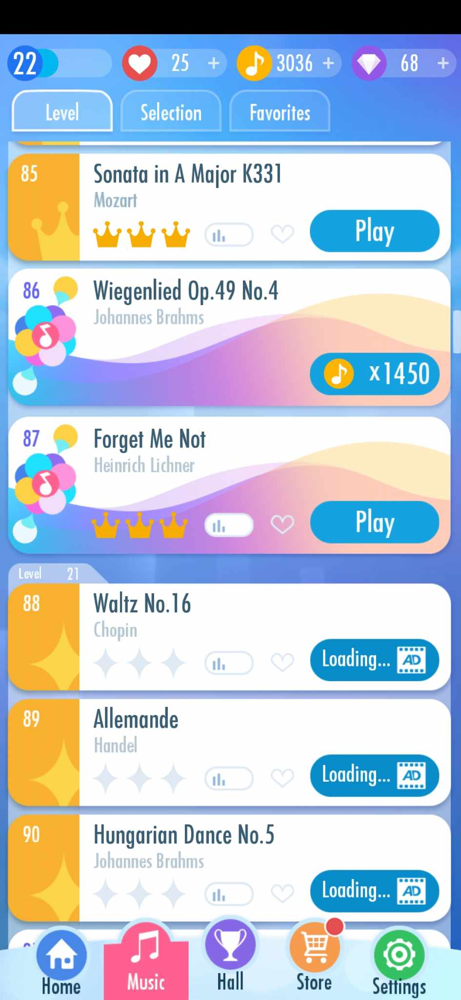
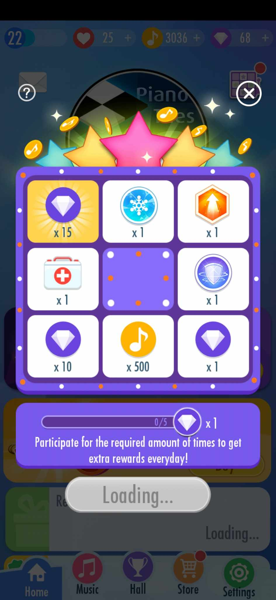
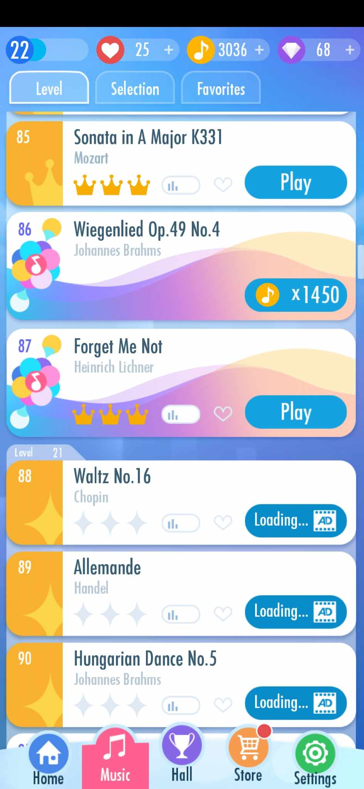
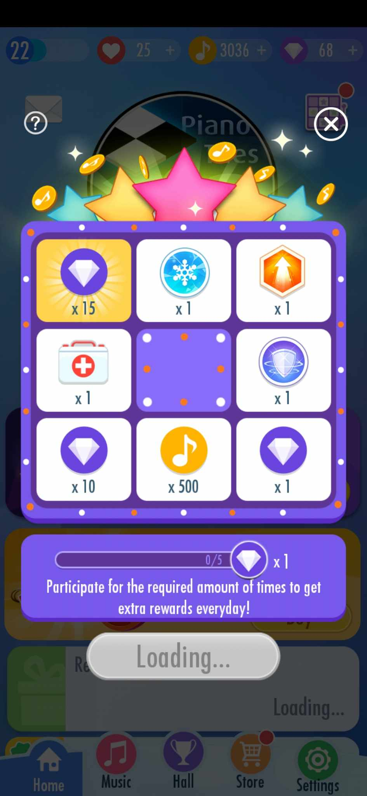

Piano Tiles
Piano Tiles is a game where the player's objective is to tap on the black tiles as they appear from the top of the screen while avoiding the white tiles. When each black tile is tapped, it will emit a piano sound. The player loses the game if they tap on a white tile.
 


